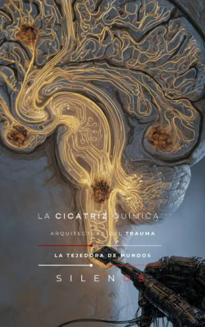

Illuminati
LA CICATRIZ QUÍMICA : Arquitectura del Trauma
Sinopsis
¿Es la identidad humana una construcción propia o un diseño programado por fuerzas históricas, biológicas y sociales? La Cicatriz Química y la Arquitectura del Trauma es una investigación profunda que desmantela los mecanismos invisibles que condicionan nuestra fisiología y nuestra voluntad. Esta obra revela cómo los eventos traumáticos, tanto individuales como colectivos, no se quedan en el recuerdo, sino que se inscriben físicamente en nuestro código genético. A través de la epigenética, el miedo y la sumisión se transmiten como marcas químicas que alteran la expresión de nuestros genes, dictando respuestas automáticas ante la vida y el poder. Lo que descubrirás en esta obra: La maquinaria epigenética: Cómo el entorno actúa como un agente de escritura que reconfigura nuestra biología. La topografía del trauma: El estudio de cómo la "Cripta" y el "Fantasma" intrapsíquicos colonizan el comportamiento del sujeto. El control neuroendocrino: La desregulación del eje HPA y cómo se utiliza la hipervigilancia como herramienta de gobernanza. Ingeniería social y amnesia: Un recorrido forense por métodos históricos de control, desde la Inquisición hasta programas contemporáneos de manipulación conductual. Desmantelamiento del individuo: Cómo las estructuras de poder utilizan el trauma manufacturado para capturar el intelecto y anular el albedrío. Este libro no es solo un análisis teórico, es un ejercicio de despertar forense. Al comprender cómo la historia, la política y la manipulación técnica han modelado nuestra arquitectura biológica, el lector obtiene las herramientas necesarias para confrontar el vacío ontológico y recuperar la soberanía sobre su propia identidad. Sumérgete en una lectura que cuestiona los cimientos de la realidad impuesta. Una obra esencial para quienes buscan entender las fuerzas que operan bajo el radar de la cognición racional.